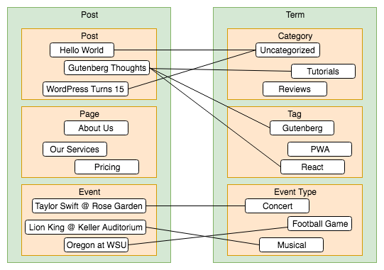
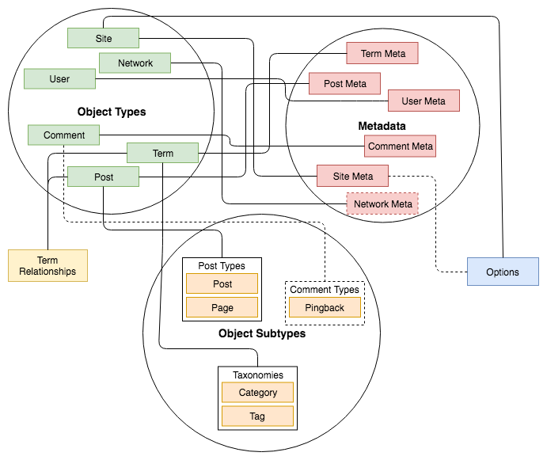

Types, Subtypes, Meta, Options
-
A presentation by @felixarntz
when talking data structures here, they don't mean data structures as in computer science
we'll start with the database schema, and then dive in deeper from there into the APIs around that data
The WordPress Database Schema
Regular Tables
wp_commentmetawp_commentswp_linkswp_optionswp_postmetawp_postswp_termmetawp_termswp_term_relationshipswp_term_taxonomywp_usermetawp_users
Additional Multisite Tables
wp_blogmeta (coming in WordPress 5.1)wp_blogswp_blog_versionswp_registration_logwp_signupswp_sitemetawp_site
12 regular tables
let's use `wp_` prefix here for convenience and differentiation
7 multisite tables (which are global)
Regular Tables
wp_commentmetawp_commentswp_linkswp_optionswp_postmetawp_postswp_termmetawp_termswp_term_relationshipswp_term_taxonomywp_usermetawp_users
Additional Multisite Tables
wp_blogmeta (coming in WordPress 5.1)wp_blogswp_blog_versionswp_registration_logwp_signupswp_sitemetawp_site
when looking at these 19 tables, we can at least identify one group at first glance
those meta tables look like they are somewhat related
Metadata Tables
wp_commentmeta→
wp_comments
wp_postmeta→
wp_posts
wp_termmeta→
wp_terms
wp_usermeta→
wp_users
wp_blogmeta→
wp_blogs
wp_sitemeta→
wp_site
we can see that each of these tables has another table that appears to go with it
we will see later that it is actually the other way around
Regular Tables
wp_commentmetawp_commentswp_linkswp_optionswp_postmetawp_postswp_termmetawp_termswp_term_relationshipswp_term_taxonomywp_usermetawp_users
Additional Multisite Tables
wp_blogmeta (coming in WordPress 5.1)wp_blogswp_blog_versionswp_registration_logwp_signupswp_sitemetawp_site
let's keep it open for now what we call this group of tables
finding the common denominator for them will be a major part of this session
the names don't get us any further, so we need to look at the table schemas now
wp_commentmeta
meta_id bigint(20) unsigned auto_increment primarycomment_id bigint(20) unsignedmeta_key varchar(255)meta_value longtext
wp_posts
ID bigint(20) unsigned auto_increment primarypost_author bigint(20) unsignedpost_date datetime...
wp_links
link_id bigint(20) unsigned auto_increment primarylink_url varchar(255)link_name varchar(255)...
wp_signups
signup_id bigint(20) unsigned auto_increment primarydomain varchar(200)path varchar(100)...
→ Entries from all tables are solely identified by aexcept...
we can see that many tables have a primary ID column by which its entries are identified
these are just a few random examples, but it's actually the case for almost all tables
yes, naming is hard
since this doesn't help us, maybe we can find out something about the exceptions
wp_options
option_id bigint(20) unsigned auto_increment primaryoption_name varchar(191) uniqueoption_value longtextautoload varchar(20)
entries can alternatively be identified through option_name
as this is the options table, you may know it is typically accessed that way
not much else to detect here, but we'll look at it more towards the end of this session due to an interesting question
Relationship Tables
wp_term_relationships
object_id bigint(20) unsigned primaryterm_taxonomy_id bigint(20) unsigned primaryterm_order int(11)
→ many-to-many relationship
only table which does not have a single identifying column, instead both object_id and term_taxonomy_id
these are both references to other table entries, it's the only relationships table in core
typically connects posts with terms (defined via code though), and by the table we can tell it is a many-to-many relationship
more on posts and terms later
Aside: Other Relationships
While wp_term_relationships is the only case of a many-to-many relationship in core, here are examples for other relationships:
wp_comments
...
comment_post_ID wp_posts...
user_id wp_users
wp_posts
...
post_author wp_users...
post_parent wp_posts...
wp_termmeta
...
term_id wp_terms...
wp_blogs
...
site_id wp_site...
→ one-to-many relationships
these are just examples, there are several more, but all are one-to-many relationships
all meta tables have a column that points to an entry of the related table
usually it's some kind of parent relationship, not only for posts, but also sites and networks (explain naming)
wp_term_taxonomy
term_taxonomy_id bigint(20) unsigned auto_increment primaryterm_id bigint(20) unsigned uniquetaxonomy varchar(32) uniquedescription longtextparent bigint(20) unsignedcount bigint(20)
wp_terms
term_id bigint(20) unsigned auto_increment primaryname varchar(200)slug varchar(200)term_group bigint(10)
entries can alternatively be identified through term_id and taxonomy together
this table should actually be one with wp_terms, it only exists for back-compat
term splitting (WP 4.2): earlier, a wp_terms entry could be associated with multiple wp_term_taxonomy entries, i.e. a single term could be associated with multiple taxonomies which caused bugs
wp_term_taxonomy
term_taxonomy_id bigint(20) unsigned auto_increment primaryterm_id bigint(20) unsigned uniquetaxonomy varchar(32) uniquedescription longtextparent bigint(20) unsignedcount bigint(20)
wp_terms
term_id bigint(20) unsigned auto_increment primaryname varchar(200)slug varchar(200)term_group bigint(10)
nowadays it's always one term and one taxonomy, therefore the relationship becomes redundant, and we can consider it one table
okay, I have to admit we cheated a bit here, since you wouldn't know that from looking at the database schema alone
but we're done with that part now anyway
Regular Tables
wp_commentmetawp_commentswp_linkswp_optionswp_postmetawp_postswp_termmetawp_termswp_term_relationshipswp_term_taxonomywp_usermetawp_users
Additional Multisite Tables
wp_blogmeta (coming in WordPress 5.1)wp_blogswp_blog_versionswp_registration_logwp_signupswp_sitemetawp_site
Legend
Regular Tables
wp_commentmetawp_commentswp_linkswp_optionswp_postmetawp_postswp_termmetawp_termswp_term_relationshipswp_term_taxonomywp_usermetawp_users
Additional Multisite Tables
wp_blogmeta (coming in WordPress 5.1)wp_blogswp_blog_versionswp_registration_logwp_signupswp_sitemetawp_site
Legend
I think that is something we can work with
we have yet to find a name for the green group though
let's now dive into the WordPress codebase to figure it out!
How WordPress Uses its Database Tables
The Post ≠ Post Dilemma
wp_posts
ID bigint(20) unsigned auto_increment primarypost_author bigint(20) unsignedpost_date datetimepost_date_gmt datetimepost_content longtextpost_title text...
post_type varchar(20)...
When speaking about posts, please clarify what you're referring to:
The overall concept of posts in WordPress?
Posts of the post type "post"?
at first glance it seems that this table stores posts (from the blog)
however, there is no wp_pages table or similar → every piece of content is a post
all posts of all post types have the same schema; the only differentiation is the post_type column
everything else that differs lies in the code (register_post_type())
it's obviously inconvenient that the name "post" is used for both things, but this should clarify it
the same actually applies to terms and their taxonomies; they all have the same schema, there is just a taxonomy column
the rest is done through register_taxonomy(); fortunately, there is no taxonomy called "term"
How Posts and Terms Relate

terms group posts together by certain taxonomies; when opening a term in the frontend, you don't see original content, but a list of the associated posts
a post can be assigned multiple terms, and a term can be assigned to multiple posts, hence the many-to-many wp_term_relationships
good to know: actually, the connection is not made through term_id, but through term_taxonomy_id (due to mentioned historic reasons)
wp_term_relationships
object_id bigint(20) unsigned primaryterm_taxonomy_id bigint(20) unsigned primaryterm_order int(11)
→ In addition to "post types", there are "object types". And they are not the same.
column for the post ID is called object_id
that is because in theory terms could be associated with other object types too
however most of WordPress expects this to be a post ID, so something else is rather hacky
object type, let's have a look what that is
What are Object Types?
when I previously said "the overall concept of posts", I should have said "the object type post"
we already identified some similarities between the two object types "post" and "term"
but to find out more, we need to look at their APIs
Object type "post"
Object type "term"
Class WP_Post
Class WP_Term
Function get_post()
Function get_term()
Function wp_insert_post()
Function wp_insert_term()
Function wp_update_post()
Function wp_update_term()
Function wp_delete_post()
Function wp_delete_term()
Function get_posts()
Function get_terms()
Class WP_Post_ Query
Class WP_Term_Query
→ If WordPress had used interfaces from the beginning,
APIs look similar (except for what should be WP_Post_Query, but who would have known 15 years ago?
while there are slight nuances in the APIs, they follow a general structure
when browsing the code further, we can actually see that there are more that follow similar behavior
sites and networks only partly have these APIs currently, but adding full support is being worked on
So why should we suddenly care about object types?
for a long time it wasn't really talked about that these follow similar architectures, aside from a few development-purist Trac tickets that never went anywhere
however, it became necessary to think about it a while ago when an interesting challenge regarding the REST API and metadata came up
Aside: What is Metadata?
wp_commentmeta
meta_id bigint(20) unsigned auto_increment primarycomment_id bigint(20) unsignedmeta_key varchar(255)meta_value longtext
wp_usermeta
umeta_iduser_id bigint(20) unsignedmeta_key varchar(255)meta_value longtext
wp_postmeta
meta_id bigint(20) unsigned auto_increment primarypost_id bigint(20) unsignedmeta_key varchar(255)meta_value longtext
wp_blogmeta
meta_id bigint(20) (unsigned) auto_increment primaryblog_id bigint(20) (unsigned)meta_key varchar(255)meta_value longtext
wp_termmeta
meta_id bigint(20) unsigned auto_increment primaryterm_id bigint(20) unsignedmeta_key varchar(255)meta_value longtext
wp_sitemeta
meta_id bigint(20) (unsigned) auto_increment primarysite_id bigint(20) (unsigned)meta_key varchar(255)meta_value longtext
arbitrary key-value pairs associated with an entry from the connected base table
multiple values per key allowed, for example to store array-like data
compare: base table name, object ID column name
not great in terms of database architecture, but they are what typically makes custom post types feel different from the regular post types (give custom "event" example, and featured images)
The Abstract Meta API
get_metadata( string $object_type , integer $object_id , string $meta_key , boolean $single )add_metadata( string $object_type , integer $object_id , string $meta_key , mixed $meta_value )update_metadata( string $object_type , integer $object_id , string $meta_key , mixed $meta_value , mixed $prev_value )delete_metadata( string $object_type , integer $object_id , string $meta_key , boolean $delete_all )
the meta tables are almost entirely consistent, so contrary to the object types themselves, metadata has an abstract API
as developers we don't usually interact with these directly because there are object type-specific wrappers for all of them
to be honest, the name of the first parameter is actually $meta_type, however that is the same thing; the object type naming came up just a few months ago
register_meta( string $object_type , string $meta_key , array $args )
(since WordPress 4.6)
An optional string $object_subtype (since WordPress 4.9.8)
REST API has been dealing with metadata in an abstract way, required a way to register metadata
initial version was barely usable for real-world use cases because most metadata used is metadata for the object type "post", and that is almost entirely used per post type (subtype) only (reuse "event" example)
it really exposes the object type and object subtype concept to plugin developers for the first time
there are some convenience wrappers, but only for the object types that support subtypes
this is just the first example of an API that exposes the concept of object types and subtypes
Definition of an Object Type
An object type in WordPress specifies a group of entities of a similar nature . The APIs of different object types follow a common structure , even in case they are technically independent. Entities of an object type are identified by a numeric ID that is set via an auto-incremented database column . Object types may or may not support subtypes , and they may or may not support metadata .
after having looked into the origin of the term and why it has become necessary to be aware of it, let's get to a definition
the technical independence of the APIs is largely due to historic reasons, and they might as well have been implemented using a common interface
Reminder
The term "object type" is not a synonym of the term "post type". Instead, "post type" is a synonym for the subtype of the "post" object type.
Overview about Core Object Types
comment
post
term
user
site
network
class
WP_CommentWP_PostWP_TermWP_UserWP_SiteWP_Network
retrieval
get_comment()get_post()get_term()get_userdata()get_site()get_network()
addition
wp_insert_comment()wp_insert_post()wp_insert_term()wp_insert_user()wp_insert_site() 1 wp_insert_network() 2
modification
wp_update_comment()wp_update_post()wp_update_term()wp_update_user()wp_update_site() 1 wp_update_network() 2
deletion
wp_delete_comment()wp_delete_post()wp_delete_term()wp_delete_user()wp_delete_site() 1 wp_delete_network() 2
querying
get_comments()get_posts()get_terms()get_users()get_sites()get_networks()
query class
WP_Comment_QueryWP_Post_ QueryWP_Term_QueryWP_User_QueryWP_Site_QueryWP_Network_Query
subtypes
kinda
yes (post types)
yes (taxonomies)
no
no
no
metadata
yes
yes
yes
yes
yes 1
kinda
1 coming in WordPress 5.12 coming in the future
explain the two "kinda" things
there are no APIs in core to easily implement custom object types, however it's certainly possible
add a custom database table, surrounding classes and APIs of a similar nature, and hook into the few integration points in core
the only part that can be quickly developed is metadata support
theoretically other core DB tables could also be implemented as object types
Comparing Options and Site Metadata
wp_options
option_id bigint(20) unsigned auto_increment primaryoption_name varchar(191) uniqueoption_value longtextautoload varchar(20)
wp_blogmeta
meta_id bigint(20) unsigned auto_increment primaryblog_id bigint(20)meta_key varchar(255)meta_value longtext
so far we ignored this, but options is a special case that needs special attention
entries are identified by numeric ID, but also by option_name
that also means there is only one value per key, different from meta
however, when looking at it in multisite scope, things get interesting
sites can be queried by metadata, but not by options
options can get massive, so site metadata would possibly get 10000 times that

Dashed lines indicate that part is rather unclear at the moment.
so after this deep dive into WordPress data structures, here is an overview about what we discovered
I hope you don't leave this in total confusion, instead I hope that the confusion that is present leads to further communication and discussion
if you have ideas, especially on those "kinda" unclear parts, please share them, in conversation, in a blog post, in a Trac ticket - I'm looking forward to it
Thank you!
Felix Arntz
Open-Source Contributor / WordPress Core Committer